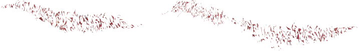
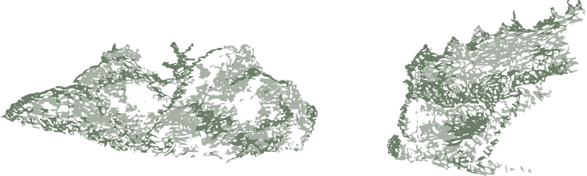

El pintor Eugenio Delacroix solía decir: “La Naturaleza es un diccionario”.
Pienso que un diccionario tiene palabras impresas, tiene páginas, tiene ilustraciones, tiene tapas, tiene empaste; en fin, tiene todos los elementos gráficos con los cuales se construye y constituye un libro; sin embargo, no es un libro.
 Aún más, es muy posible que para escribir un libro haya que consultar alguna vez un diccionario, pero tal como ya lo afirmamos, éste, no es un libro.
Cuando era joven y asistía a los cursos de la Escuela de Bellas Artes para copiar una figura desnuda, aprendí a dibujarla, pero nunca una figura es una escultura.
La gran dificultad estriba en pasar del estudio, al arte.
Lo que ocurre, en la gran mayoría de los casos, es que se confunde el estudio con el arte.
El estudio será siempre naturaleza, es decir, diccionario.
El arte es siempre construcción, es decir, libro.
La construcción es siempre obra, es decir, abstracción.
¿Qué construye una obra abstracta?
MUNDO.
¿Qué significa MUNDO?
Sin olvidar su oscura etimología: sentido de orden, pulcritud, limpieza.
¿Qué sentido tiene MUNDO?
Sólo uno: la fiesta.
MUNDO, en nuestra concepción, es el “lugar natural” de toda construcción.
Por “lugar natural” entendemos aquel que es abierto por la fiesta, el artificio, como lugar originario de reunión de todas las construcciones de travesía.
Es el lugar de nacimiento de toda ulterior construcción.
Toda construcción surge de la fiesta y vuelve a ella, para “reacondicionar” el mundo.
Esta latencia de perfección oculta, surge en la proclamación como consumación de la misma.
La proclamación se debe distanciar de la vida misma para tornarse fiesta, es presentación escénica que se despoja de lo cotidiano para convertirse en imagen.
Imagen es sólo una cualidad sensible que se presenta a la mente sólo cuando se produce la ausencia del estímulo sensible.
MAYOR DISTANCIA ES POCO PROBABLE.
El Taller de Titulación de Diseño Gráfico tiene confiada, como obra, las proclamaciones de la travesía de este año.
Hoy, con esta proclamación, primera e inaugural, la ponemos en acto.
Y lo hacemos ciñéndonos muy carnalmente a una frase de la "Oda Kappa": ¿Quién no se sorprendió otro en plena distracción?”.
Esto implica consumir todo refugio, de costumbres, usos y caracteres; aún más, de oficio y estudio.
Nuestra permanente instalación en ellos nos impiden recibir la lucidez que nos abrirá la otra realidad.
La fiesta, que se piensa siempre como culminación final; es ahora inicial y la proclamación consiste en observar y vivir la contemplación de una obra de escultura, en su espacio y en su tiempo.
MAYOR DISTANCIA ENTRE EL “MAR DULCE”, ASI LO LLAMÓ SOLÍS; Y LA CONTEMPLACIÓN DE UNA ESCULTURA COMO PROCLAMACIÓN, ES POCO PROBABLE.
Estas también son distancias de la extensión en América.
Cuando se proclama no se hace clase.
Cuando se proclama se profiere.
Digo entonces como profericción: lo que anhelo expresar, contenido en el mundo íntimo de mi libertad, necesita ser materializado en el mundo íntimo de la necesidad externa, en el mundo del espacio. Siendo sólo allí donde alcanza mayor plenitud.
Cuando mi libertad deviene forma construye la obra.